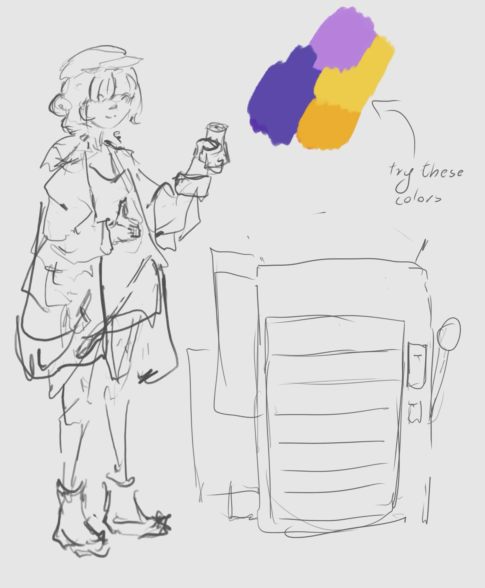
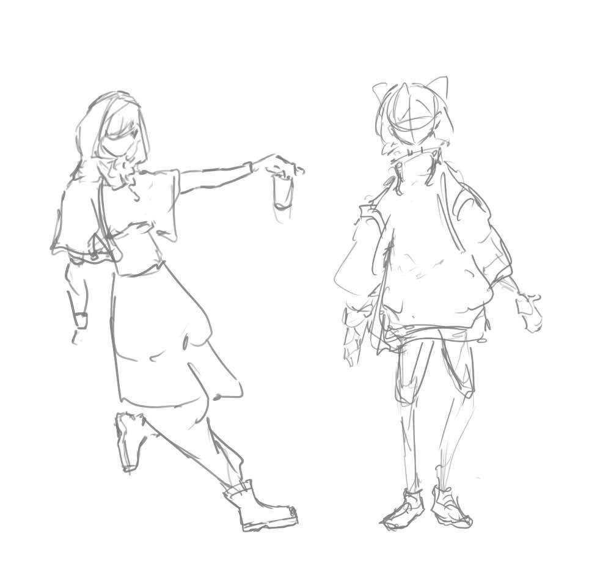
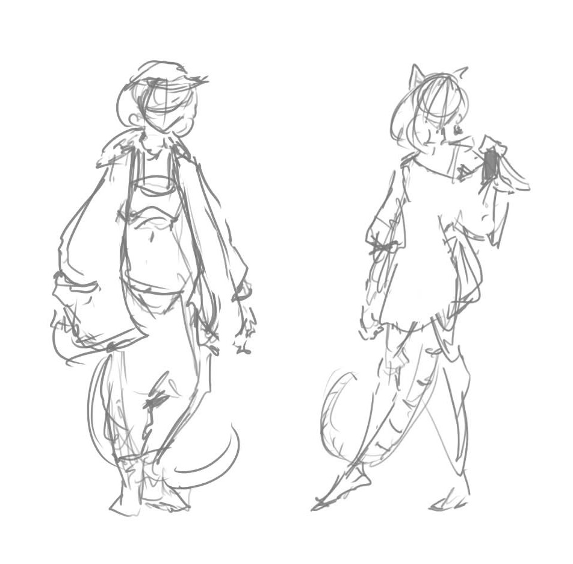
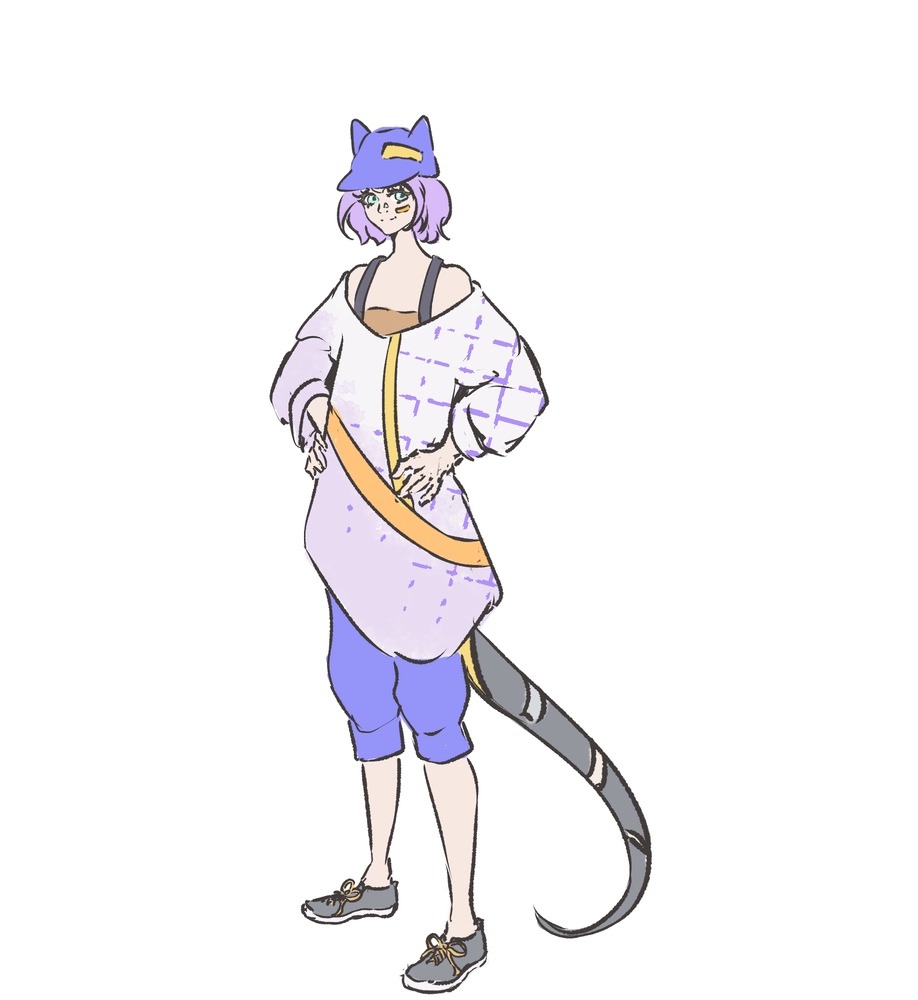

Who's Nina?
Nina it's the girl you just saw on the main page, floating in space, inanimate and unfinished. Not by design, but more because of time constraints,
created by my inability to get down to doing things, before deadlines start screaming at my lazy ass. The name "Nina" came up basically just now while I'm writing this.
I basically looked at the name of the site, took the numbers (2) and (7) read them in Japanese (2 - ni, 7 - nana) and that's how the name was born. Original, I know.
So who is she? Honestly I have no idea, she was just supposed to be there to create an illusion of a more finished site and also I felt like I wanted to draw something.
She's not really finished or have an established personality, aside from being mostly cheerful and careless.
Early Conept
The idea of the character came up after the site, so from the start I knew the "vibe" I was going for. I wanted to make the character look friendly, have street wear style and probably young. So I started with the basic sketch of the character, with the weirdest vending machine along side it. As a concpet it was fine, I pretty much locked in immediately on top-heavy design with shorter hair, but still wasn't sure about the colors, so I left it until I had the silhouette thought out. I never looked back on the vending machine, I don't know what I was going for.

Some exploration

At first I tried more cyberpunkish shapes since the style/setting wasn't set yet, but they looked too much like some deliquents rather than just another person on the street.
boots that went above the ankle also weren't really sticking with me, they made it feel like they were less on a street and more in the outskirts with nwakable roads, so I decided to not go with that either.
The cat ears were cool though (they always are)
Close to final

here I went for a little more, I'd say "natural" clothing with a little more balance in terms of weight.
The hat came back and style felt more casual and as you can see a tail appeared, I don't think I have to explain why.
Final design... for now

Also I completely made up everything I wrote on this page just to fill it up